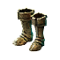

Открыть в интерактивной вики →
| Требуемый уровень | 50 |
|---|---|
| Редкость | Психорар |
| Улучшения | звёзды, орбы, осколки |
| Тип | Сапоги |
| Цена | 700 000 |
| Ремонт | 250к+ |
| Заряды | 3000 |
| Вместимость дрифов | 10 |
| Требуемая ловкость | 50 |
| Сила | 13 |
| Ловкость | 12 |
| Здоровье | 53 |
| Выносливость | 7 |
| Сопр. рубящим | 33 |
| Сопр. дробящим | 27 |
| Сопр. колющим | 33 |
| Сопр. энергии | 15 |